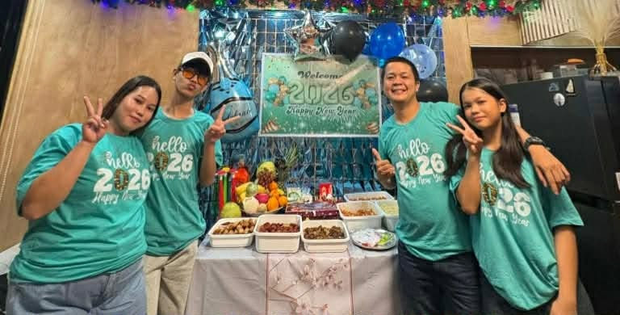

ABOUT ME

Personal Background
Hello! My name is King John D. De Lara, a 14-year-old student from Sta, Ana National High School, Davao City.
My ambition is to graduate with a Bachelor of Secondary Education, Major in Mathematics, and become a Licensed Professional Teacher.
In my free time, I enjoy watching Thai BL series featuring my favorite artists Perth and Santa, playing volleyball, collecting rainbow-colored items, eating Chicken Curry and Tinolang Sabaw, and spending meaningful time with my favorite person who makes me feel truly accepted.
My NuyBe — I can freely talk to them whenever I have problems, resolve misunderstandings together, and feel truly accepted.
Favorites & Family

Paul John De Lara (Father), Daisy A. Dorlones (Mother), and Kristine Joy D. De Lara (Sibling) — My family is my greatest source of love, support, and motivation.